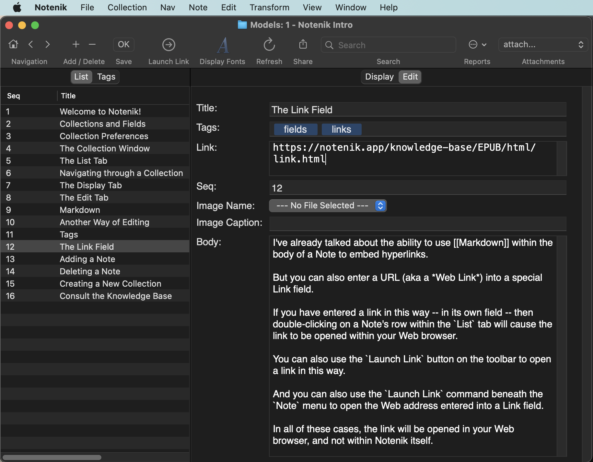

12 The Link Field
I’ve already talked about the ability to use Markdown within the body of a Note to embed hyperlinks.
But you can also enter a URL (aka a Web Link) into a special Link field.
If you have entered a link in this way – in its own field – then double-clicking on a Note’s row within the List tab will cause the link to be opened within your Web browser.
You can also use the Launch Link button on the toolbar to open a link in this way.
And you can also use the Launch Link command beneath the Note menu to open the Web address entered into a Link field.
In all of these cases, the link will be opened in your Web browser, and not within Notenik itself.
Next: Adding a Note